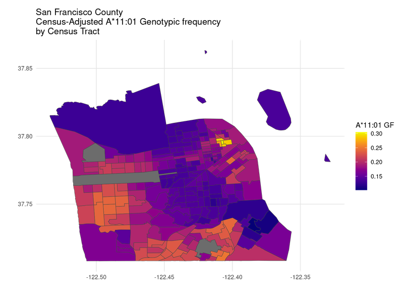

Please refer to Github pages (pkgdown) Documentation to get started, and to find data from Roy2025.
CensusHLA is an R package designed to facilitate the analysis of HLA allele frequencies across the United States using census data and other external datasets. The package provides tools for importing, processing, and visualizing HLA frequency data, as well as integrating it with spatial and demographic information. It is particularly useful for researchers working in population genetics, immunogenetics, and public health.
 ## Contributing
Contributions are welcome! Please submit issues or pull requests via GitHub.
Acknowledgments
- Gragert et al. (2013) for HLA frequency data. Gragert et al. (2013)
- US Census Bureau for spatial and demographic data. “US 2020 Census” (n.d.)
- censusapi R package Recht (2017) for accessing census data.
- The NCI for awesome cancer catchment data. DelNero et al. (2022)
- The
sf,h3jsr,rnaturalearth, andusmappackages for spatial data handling and visualization.
References
DelNero, Peter F., Ian D. Buller, Rena R. Jones, Zaria Tatalovich, Robin C. Vanderpool, Henry P. Ciolino, and Robert T. Croyle. 2022. “A National Map of NCI-Designated Cancer Center Catchment Areas on the 50th Anniversary of the Cancer Centers Program.” Cancer Epidemiology, Biomarkers & Prevention 31 (5): 965–71. https://doi.org/10.1158/1055-9965.EPI-21-1230.
Gragert, Loren, Abeer Madbouly, John Freeman, and Martin Maiers. 2013. “Six-Locus High Resolution HLA Haplotype Frequencies Derived from Mixed-Resolution DNA Typing for the Entire US Donor Registry.” Human Immunology 74 (10): 1313–20. https://doi.org/10.1016/j.humimm.2013.06.025.
Recht, Hannah. 2017. “Censusapi: Retrieve Data from the Census APIs.” Comprehensive R Archive Network. https://doi.org/10.32614/CRAN.package.censusapi.
“US 2020 Census.” n.d. Accessed January 11, 2023. https://data.census.gov/table/DECENNIALCD1182020.P9?q=Race.